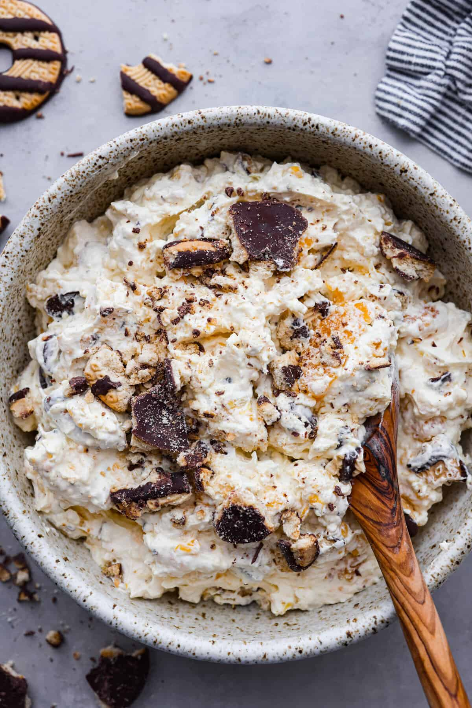

Home
Odin Recipes | Cookie Salad
Cookie Salad

This unconventional recipe will make anyone fall in love with it.
Ingredients
- Buttermilk
- Instant Vanilla Pudding
- Cool Whip
- Mandarin Oranges
- Crushed Pineapple
- Fudge Stripe Cookies
Directions
- Mix the Buttermilk and Pudding Powder: In a large bowl, combine the buttermilk and instant vanilla pudding powder. Whisk until combined. The mixture will be thick.
- Fold in the Cool Whip: Fold in the Cool Whip.
- Add the Mandarin Oranges and Pineapple: Gently stir in the drained mandarin oranges and crushed pineapple.
- Chill: Cover and refrigerate the cookie salad until ready to serve.
- Fold in the Cookie Pieces: Right before serving, chop or crumble fudge stripes cookies then fold them into the pudding mixture.
- Garnish and Serve: Garnish with additional cookie pieces on top if desired.